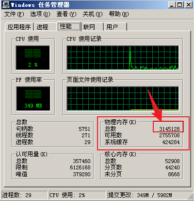
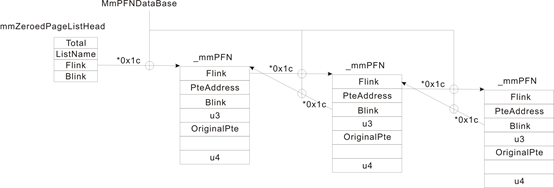

# 物理内存
<1> 最大物理内存
10-10-12分页 最多识别物理内存为4GB
2-9-9-12分页 最多识别物理内存为64GB
<2> 操作系统限制
为什么在 xp 中，明明是 2-9-9-12 分页，单仍然无法超越 4GB 呢？
具体可以分析 MmAddPhysicalMemoryEx 函数。存粹是操作系统限制。
<3> 实际物理内存
MmNumberOfPhysicalPages * 4 = 物理内存 (页为单位)
# 物理内存如何管理
在 XP 上一个物理页的大小是 4096 BYTE = 0x1000 BYTE = 4 KB = 4 * 1024B
查看 XP 上的物理页：

对于物理内存，操作系统采用帧管理数据库的模式。
一个物理页就是一帧，被称之为帧数据库：
其实就是数组，数组的指针： _MMPFN* MmPfnDatabase 而数组的长度是： MmNumberOfPhysicalPages
而数组成员都是 _MMPFN 结构
在 windbg 中查看：
kd> dt _MMPFN | |
nt!_MMPFN | |
+0x000 u1 : __unnamed | |
+0x004 PteAddress : Ptr32 _MMPTE | |
+0x008 u2 : __unnamed | |
+0x00c u3 : __unnamed | |
+0x010 OriginalPte : _MMPTE | |
+0x018 u4 : __unnamed |
在 xp 源码中查看：
typedef struct _MMPFN { | |
union { | |
PFN_NUMBER Flink; | |
WSLE_NUMBER WsIndex; | |
PKEVENT Event; | |
NTSTATUS ReadStatus; | |
SINGLE_LIST_ENTRY NextStackPfn; | |
} u1; | |
PMMPTE PteAddress; | |
union { | |
PFN_NUMBER Blink; | |
ULONG_PTR ShareCount; | |
} u2; | |
union { | |
MMPFNENTRY e1; | |
struct { | |
USHORT ShortFlags; | |
USHORT ReferenceCount; | |
} e2; | |
} u3; | |
#if defined (_WIN64) | |
ULONG UsedPageTableEntries; | |
#endif | |
MMPTE OriginalPte; | |
union { | |
ULONG_PTR EntireFrame; | |
struct { | |
#if defined (_WIN64) | |
ULONG_PTR PteFrame: 58; | |
#else | |
ULONG_PTR PteFrame: 26; | |
#endif | |
ULONG_PTR InPageError : 1; | |
ULONG_PTR VerifierAllocation : 1; | |
ULONG_PTR AweAllocation : 1; | |
ULONG_PTR LockCharged : 1; // maintained for DBG only | |
ULONG_PTR KernelStack : 1; // only for valid (not trans) pages | |
ULONG_PTR Reserved : 1; | |
}; | |
} u4; | |
} MMPFN, *PMMPFN; |
可以发现这个结构体 _MMPFN 的大小是 0x1C。
在 XP 中查看帧结构数组的基址：
kd> dd MmPfnDatabase l1 | |
805630c8 80e00000 |
80e00000+0x1C 就是第二个物理页的帧结构数组，那么我们如何知道这个数组对应的物理页呢？
这里操作系统的设计非常巧妙，帧结构数组的索引对应着相应的物理页，如果索引为 0 则对应的物理页地址为 0 * 4kB ；如果索引为 1 则对应的物理页地址为 1 * 4kB 。
# 总结：
物理页的数量是由 MmNumberOfPhysicalPages 决定的
物理页如何管理：每一个物理页都对应一个 MMPFN 的结构
如何通过帧数组找物理页和如何通过物理页找帧数组都已经知道了。
# 物理页的状态
物理页有着不同的状态，正在被使用的和没有被使用的，又分为好多状态。
_MMPFN 结构体成员 u3 ：
union { | |
MMPFNENTRY e1; | |
struct { | |
USHORT ShortFlags; | |
USHORT ReferenceCount; | |
} e2; | |
} u3; |
我们查看其成员 e1 的结构：
typedef struct _MMPFNENTRY { | |
ULONG Modified : 1; | |
ULONG ReadInProgress : 1; | |
ULONG WriteInProgress : 1; | |
ULONG PrototypePte: 1; | |
ULONG PageColor : 3; | |
ULONG ParityError : 1; | |
ULONG PageLocation : 3; | |
ULONG RemovalRequested : 1; | |
ULONG CacheAttribute : 2; | |
ULONG Rom : 1; | |
ULONG LockCharged : 1; | |
ULONG DontUse : 16; //overlays USHORT for reference count field. | |
} MMPFNENTRY; |
其中的 ULONG PageLocation : 3; 成员就决定了当前物理页处于什么状态。
以下是没有被使用的几种状态：
0：MmZeroedPageListHead | |
1：MmFreePageListHead | |
2：MmStandbyPageListHead | |
3：MmModifiedPageListHead | |
4：MmModifiedNoWritePageListHead | |
5：MmBadPageListHead |
# 操作系统的 6 个链表
<1> MmBadPageListHead
坏链
<2> MmZeroedPageListHead
零化链表（是系统在空闲的时候进行零化的，不是程序自己清零的那种）
<3> MmFreePageListHead
空闲链表（物理页是周转使用的，刚被释放的物理页是没有清 0，系统空闲的时候有专门的线程从这个队列摘取物理页，加以清 0 后再挂入 MmZeroedPageListHead）
<4> MmStandbyPageListHead
备用链表（当系统内存不够的时候，操作系统会把物理内存中的数据交换到硬盘上，此时页面不是直接挂到空闲链表上去，而是挂到备用链表上，虽然我释放了，但里边的内容还是有意义的）
<5> MmModifiedPageListHead
<6> MmModifiedNoWritePageListHead
具体可以参考 《Windows 内核原理与实现》
我们看一下这些链表的结构：
typedef struct _MMPFNLIST { | |
PFN_NUMBER Total; | |
MMLISTS ListName; | |
PFN_NUMBER Flink; | |
PFN_NUMBER Blink; | |
} MMPFNLIST; | |
MMPFNLIST MmZeroedPageListHead = { | |
0, // Total | |
ZeroedPageList, // ListName | |
MM_EMPTY_LIST, //Flink | |
MM_EMPTY_LIST // Blink | |
}; | |
MMPFNLIST MmFreePageListHead = { | |
0, // Total | |
FreePageList, // ListName | |
MM_EMPTY_LIST, //Flink | |
MM_EMPTY_LIST // Blink | |
}; | |
MMPFNLIST MmStandbyPageListHead = { | |
0, // Total | |
StandbyPageList, // ListName | |
MM_EMPTY_LIST, //Flink | |
MM_EMPTY_LIST // Blink | |
}; | |
MMPFNLIST MmModifiedPageListHead = { | |
0, // Total | |
ModifiedPageList, // ListName | |
MM_EMPTY_LIST, //Flink | |
MM_EMPTY_LIST // Blink | |
}; | |
MMPFNLIST MmModifiedNoWritePageListHead = { | |
0, // Total | |
ModifiedNoWritePageList, // ListName | |
MM_EMPTY_LIST, //Flink | |
MM_EMPTY_LIST // Blink | |
}; | |
MMPFNLIST MmBadPageListHead = { | |
0, // Total | |
BadPageList, // ListName | |
MM_EMPTY_LIST, //Flink | |
MM_EMPTY_LIST // Blink | |
}; | |
// | |
// Note the ROM page listhead is deliberately not in the set | |
// of MmPageLocationList ranges. | |
// | |
MMPFNLIST MmRomPageListHead = { | |
0, // Total | |
StandbyPageList, // ListName | |
MM_EMPTY_LIST, //Flink | |
MM_EMPTY_LIST // Blink | |
}; | |
PMMPFNLIST MmPageLocationList[NUMBER_OF_PAGE_LISTS] = { | |
&MmZeroedPageListHead, | |
&MmFreePageListHead, | |
&MmStandbyPageListHead, | |
&MmModifiedPageListHead, | |
&MmModifiedNoWritePageListHead, | |
&MmBadPageListHead, | |
NULL, | |
NULL }; |
那我们该如何把这些串起来呢？
先来看一张表：

理解这六个链表是如何和 MMPFN 结构串起来的。
在 Windbg 中查看一下 MmZeroedPageListHead 链表：
kd> dd MmZeroedPageListHead l4 | |
805528e8 0008ed15 00000000 0005a628 00039e07 | |
kd> dt _MMPFNLIST 805528e8 | |
nt!_MMPFNLIST | |
+0x000 Total : 0x8ed15 | |
+0x004 ListName : 0 ( ZeroedPageList ) | |
+0x008 Flink : 0x5a628 | |
+0x00c Blink : 0x39e07 |
kd> dd 80e00000 + 0x5a628*0x1C | |
817e2c60 000363b8 c058a679 ffffffff 00003000 | |
kd> dd 80e00000 + 000363b8*0x1C | |
813ee820 000902a8 c0006d01 0005a628 00003000 | |
kd> dd 80e00000 + 000902a8*0x1C | |
81dc4a60 0007fdb8 c0710af1 000363b8 00003000 |
# 正在使用中的内存
查看一个进程所占用的所有物理页：
这里以 DbgView 为例:
在 Windbg 中查看 DbgView 的 EPROCESS 结构体：
kd> dt _EPROCESS 89e21830 | |
nt!_EPROCESS | |
…… | |
…… | |
+0x1f8 Vm : _MMSUPPORT | |
…… | |
…… |
kd> dt _MMSUPPORT 89e21830+0x1f8 | |
nt!_MMSUPPORT | |
+0x000 LastTrimTime : _LARGE_INTEGER 0x01d86059`8f011bc0 | |
+0x008 Flags : _MMSUPPORT_FLAGS | |
+0x00c PageFaultCount : 0x41b | |
+0x010 PeakWorkingSetSize : 0x3da | |
+0x014 WorkingSetSize : 0x3d5 | |
+0x018 MinimumWorkingSetSize : 0x32 | |
+0x01c MaximumWorkingSetSize : 0x159 | |
+0x020 VmWorkingSetList : 0xc0883000 _MMWSL | |
+0x024 WorkingSetExpansionLinks : _LIST_ENTRY [ 0x8a063dd4 - 0x89d34ee4 ] | |
+0x02c Claim : 0 | |
+0x030 NextEstimationSlot : 0 | |
+0x034 NextAgingSlot : 0 | |
+0x038 EstimatedAvailable : 0 | |
+0x03c GrowthSinceLastEstimate : 0x41b |